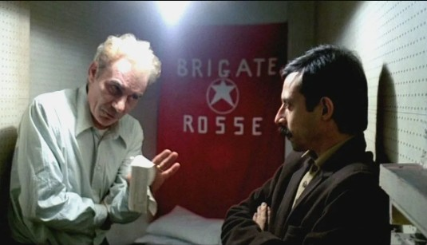
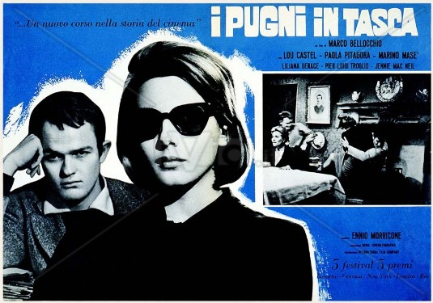

Cultura
Coltivando la Cultura: Uno Spazio di Informazione e Scambio
Premessa
Vorrei impostare la pagina, aperta a contributi pubblicabili in caso di parere favorevole, come un luogo di informazione e scambio. Come primo articolo, intendo pubblicare una lettera rivolta a tutti gli eventuali lettori, al fine di spiegare il progetto nelle sue modalità e nei suoi tempi.
News e Articoli
Progetto Villapiana 23: Bellezza e Solidarietà
Domenica 15 ottobre 2023 alle 18.00 si è tenuto nella Sala di Palazzo Musmanno il convegno promosso da Villapiana Borgo Attivo in collaborazione con Il Borgo di Setea, Il Raggio Verde e Le Nobil Dame: Progetto Villapiana 23. Bellezza e Solidarietà.
Ha introdotto il tema e coordinato i lavori – interagendo con i relatori - il presidente dell’Associazione Oreste Bellini, che salutando i presenti ha colto l’occasione per ringraziare l’Amministrazione Comunale per la concessione della Sala, adeguatamente attrezzata allo svolgimento di incontri con i cittadini. Di seguito relazioniamo sugli interventi dei relatori.
Inoltre, per coloro che desiderano rivivere i momenti salienti di questo significativo convegno o per chi non ha potuto partecipare, abbiamo reso disponibile il video integrale dell'evento. Potrete trovare il video incorporato in questa pagina per approfondire ulteriormente le interessanti discussioni e gli interventi dei relatori.
Bellezza e Guerra. Le due facce dell’Homo Sapiens
Domenica 25 giugno 2023, dalle 18,00, nella sede dell’Associazione “Centro d’Esperienze Raggio Verde” al Palazzo del Vecchio Municipio, nel Centro Storico di Villapiana, l’Associazione Villapiana Borgo Attivo Ets ha organizzato il convegno nell’ambito del Progetto Villapiana: Arte, Scienza e Letteratura, con il tema:
Bellezza e Guerra. Le due facce dell’Homo Sapiens
Ha introdotto e condotto Oreste Bellini (Presidente di Villapiana Borgo Attivo), che ha stimolato la discussione con alcune sue argomentazioni tra le quali quella sulla “paura della morte”, insita nell’uomo come esperienza primordiale, come lascito dell’esperienza spermatozoica, come lotta per la vita, ma non realizzata nella vita successiva.
Per esplorare ulteriormente l'evento e immergervi completamente nelle discussioni e nelle immagini catturate durante il convegno, vi invitiamo a leggere l'articolo completo. Troverete anche un video e una galleria fotografica dedicati all'evento.
Il Club Leutermia e l’Oleandro – Vent’anni di cronaca villapianese
Sabato 9 settembre 2023, alle 18.00, nella sala gremita di Palazzo Musmanno si è tenuto l’evento Il Club Leutermia e l’Oleandro – Vent’anni di cronaca villapianese, organizzato dal dottor Leonardo Diodato e patrocinato dal Comune di Villapiana. È stata inaugurata una Mostra Fotografica (a cura del dott. Diodato) che ripercorre le tante iniziative che il Club Leutermia e il periodico l’Oleandro hanno organizzato a Villapiana in 20 anni di attività, dal Presepe Vivente, alle Fiere Gastronomiche, alle iniziative di socializzazione per gli anziani, alle attività convegnistiche su temi culturali e sociali.
Il convegno è stato coordinato dal giornalista Franco Maurella che, dopo i saluti istituzionali dell’assessore Rita Portulano, ha introdotto il tema principale, In memoria di Diego Bellini, sul quale è intervenuto Gianni Mazzei, ricordando a grandi linee la figura dell’intellettuale, del giornalista, dello studioso che aveva scelto di vivere a Villapiana. Mazzei si è soffermato sugli importanti studi di Bellini che hanno riguardato l’antica Leutermia e la medievale Casalnuovo; importantissimo il ruolo di direttore dell’Oleandro.
Il tema l’Oleandro, vent’anni di idee e di sfide è stato introdotto ed illustrato dal dottor Leonardo Diodato; un excursus che non ha tralasciato di evidenziare quali siano stati i successi, ma anche le difficoltà che il periodico ha incontrato nei venti anni di uscite. Puntuale e sentitissimo – oltre che seguitissimo – è stato il ricordo di Antonio Miniaci, che ha sottolineato come l’Oleandro fosse riuscito anche ad “uscire” fuori dai confini villapianesi.
Un certo grado di commozione è stato raggiunto con la premiazione dello studente Pietro Giacobini, autore di un tema sulla guerra e le sue conseguenze. Il tema – letto da Pietro – è stato premiato selezionandolo da un numero di altri elaborati partecipanti, tra i frequentanti la classe terza della Scuola Secondaria di primo grado Giovanni Pascoli di Villapiana. Il premio – che verrà riproposto negli anni a venire – è intitolato a Diego Bellini. Presidente del Premio e della giuria è l’insegnante Filomena Rugiano, che ha illustrato come si è giunti – da un corso specifico di scrittura creativa – all’ideazione del premio e all’attuale scelta della giuria.
Le conclusioni sulla serata sono state tratte da un intervento del Sindaco Paolo Montalti e in maniera ampia dal dottor Leonardo Diodato che ha ribadito quanto sia importante agire per la promozione culturale ad ogni livello in una comunità come quella villapianese.
Pubblichiamo qui il video integrale dell’iniziativa del 9 settembre 2023. Pubblichiamo anche un video di un convegno del 28 marzo 1993 per i 10 anni dell’Oleandro: L’importanza di un giornale nel risveglio di una comunità. Il convegno tenutosi presso la sala del Ristorante La Fonte di Villapiana Lido ha visto tra i presenti (ed intervenuti): Diego Bellini e Leonardo Diodato; dott. Alfonso Guido, vice-prefetto di Cosenza; avv. Piero Carbone, segretario Accademia Cosentina; prof. Siri; dott. Luigi Bria, sindaco di Villapiana.
Antonio Bria – Oreste Bellini
Video 20 anni Oleandro - Club Leutermia 9 settembre 2023
Video 10 anni di Oleandro marzo 1993
Graziella & Alphonse
Domenica 28 maggio, presso il Municipio Vecchio - nei locali comunali dell’Associazione Centro di Esperienza Raggio Verde che gentilmente ci ospita - abbiamo presentato, in collaborazione con Il Borgo di Setea, il Raggio Verde e Le Nobil Dame, l’opera Graziella, tratta dal romanzo autobiografico di Alphonse de Lamartine. Ha introdotto e coordinato il giornalista Franco Maurella e sono intervenuti, dopo i saluti di Oreste Bellini (Presidente di Villapiana Borgo Attivo), Gianni Mazzei e Mariagrazia Scarnecchia.
Al fine di offrire un'esperienza completa dell'evento, vi informiamo che nell'articolo dedicato, oltre a approfondimenti sulle tematiche trattate, troverete anche un video e una galleria fotografica che catturano i momenti salienti della presentazione di Graziella. Vi invitiamo a esplorare l'articolo completo per rivivere o scoprire questi momenti unici.
Bellezza e Socialità
Domenica 21 maggio 23 l’Associazione Villapiana Borgo Attivo in collaborazione con il Borgo di Setea, le Nobil Dame e il Raggio Verde ha iniziato il ciclo di incontri "Villapiana 23: arte, scienza e letteratura" con la tavola rotonda: "Bellezza e Socialità". Sono intervenuti Leonardo Diodato, Gianni Mazzei, Maria Grazia Scarnecchia, Antonio Bria.
Prima di esplorare ulteriormente il contenuto di questa affascinante tavola rotonda, vi anticipiamo che nell'articolo completo troverete un video e una galleria fotografica dedicati all'evento. Questi elementi multimediali vi permetteranno di rivivere i momenti più significativi e di approfondire ulteriormente i temi trattati durante l'incontro. Vi invitiamo a consultare l'articolo completo per godere appieno di questa esperienza.
Flash Mob al Gambrinus - Napoli
Genetica e Umanità
Collaborazione con la Scuola Media di Villapiana
Nell’ambito della nostra attività Storie per Immagini (Forum su opere cinematografiche) abbiamo iniziato una collaborazione con la scuola Secondaria di primo grado, Giovanni Pascoli di Villapiana. Il 2 maggio, abbiamo proiettato il film La forma della voce che affronta il tema del bullismo.
A distanza di qualche giorno (il 5 maggio) abbiamo incontrato i ragazzi di III media che avevano visto il film. Ne è scaturita una discussione vivace, una risposta veramente buona, anche perché questo tema si inseriva nel programma di studio. Il successo dell’attività ha incoraggiato noi e la scuola a proseguire con gli incontri. Un vivo grazie alla Dirigente e a tutto il gruppo insegnante per la collaborazione.
Maria Grazia Scarnecchia
Storie per Immagini – “La grande Illusione”
Before the Flood – Punto di non ritorno.
Abbiamo visto, non senza sgomento, il film documentario “Punto di non ritorno“ sul cambiamento climatico che, ancora oggi, lascia indifferente una parte non piccola di abitanti del nostro pianeta. Eppure sentiamo le notizie, le interviste agli scienziati, eppure vediamo immagini di inondazioni, di desertificazione, di disgelo incontrollabile. Punto di non ritorno, dunque? Sì se continuiamo a ignorare gli impegni presi nelle conferenze annuali per fermare questo cambiamento, non c’è dubbio! Ma qua e là nelle interviste serpeggia una via d’uscita possibile e lo strumento siamo noi, i cittadini delle diverse nazioni. Sappiamo quanto i politici dipendano dai nostri voti, ce lo dice l’attenzione sempre maggiore ai sondaggi. Bene, se riusciremo a manifestare pubblicamente il nostro dissenso, al di là delle personali tendenze ideologiche, avremo la forza di condizionare le scelte politiche sul cambiamento. Difficile vedere un’alternativa al nostro impegno.
Accogliamo le richieste di quanti non hanno potuto partecipare alla visione e riproporremo quanto prima la proiezione del film.
(Maria Grazia Scarnecchia)
Storie per Immagini – “La grande Illusione” – terzo appuntamento
La nuova data: Mercoledì 25 gennaio 2023.
Il programma di proiezioni di film, strutturato per temi e periodi, prosegue con Before the Flood (Punto di non ritorno), di Leonardo Di Caprio e Fisher Stevens, Mercoledì 25 Gennaio 2023, ore 20,30 nella sede Villapiana Borgo Attivo in via Umberto I. Il tema del cambiamento climatico è quanto mai interessante per tutti noi. Vi aspettiamo!
A che punto sono i cambiamenti climatici e cosa possiamo fare per attenuare questo fenomeno? È il tema al centro del documentario “Punto di non ritorno” (Before the flood), prodotto e interpretato da Leonardo Di Caprio e diretto da Fisher Stevens. Uscito nel 2016 è stato trasmesso da National Geographic in 171 paesi.
Punto di non ritorno – Before the flood è stato realizzato in 3 anni e apre gli occhi sui terribili effetti, ormai evidenti, del riscaldamento globale. Di Caprio affronta la questione del cambiamento climatico e delle sue conseguenze discutendo con alcune delle personalità più influenti del pianeta, come il presidente americano Barack Obama, Papa Francesco, Elon Musk, John Kerry e altri esperti di economia ed ecologia. Un punto sulla situazione attuale per convincere anche i molti negazionisti.
Il documentario è ambientato in giro per il mondo, dall’America alla Cina, passando per l’Italia, l’India e fino al Circolo Polare Artico, tra escursioni in zone naturali danneggiate dall’uomo e interviste con meteorologi, politici ed economisti per capire quanto l’attività umana stia distruggendo la Terra e quali siano le soluzioni che si possono ancora adottare per evitare una vera catastrofe ambientale. Non è, infatti, solo una denuncia al problema, ma tratta le possibili soluzioni, dando voce anche alle posizioni di coloro che minimizzano la questione, per dare così una panoramica complessiva sul tema.
Con questo film l’attivista Di Caprio vuole tenere alta l’attenzione sul fenomeno, smuovere le coscienze e sottolineare la necessità di leader che credano nella scienza dei climate change e abbiano il coraggio di prendere delle posizioni concrete per vincere la sfida ambientale più urgente del nostro tempo, prima che si arrivi veramente ad un punto di non ritorno.
Pier Paolo Pasolini
Considerazioni sul Poeta e sul Saggista
4 dicembre 2022 ore 17.00 – sede dell’Associazione Villapiana Borgo Attivo – Villapiana Centro Storico.
Ha avuto successo l’iniziativa “Pier Paolo Pasolini - Considerazioni sul Poeta e sul Saggista”. Evento Culturale organizzato dall’Associazione Villapiana Borgo Attivo, in collaborazione con Il Borgo di Setea e Le Nobil Dame di Maria Antonia Bevilacqua.
Nell'ambito dell'articolo completo, vi invitiamo a scoprire ulteriori dettagli sull'iniziativa culturale "Pier Paolo Pasolini - Considerazioni sul Poeta e sul Saggista". In particolare, troverete un video associato all'evento, che cattura i momenti salienti e le riflessioni condivise durante la serata. Vi incoraggiamo a consultare l'articolo completo per godere appieno di questa preziosa registrazione.
I riti di passaggio nel mondo culturale della Arberia
Giovedì 27 Ottobre pomeriggio presso la Biblioteca Torre di Albidona gli amici di Conoscere il Territorio hanno presentato il seminario che ha trattato I riti di passaggio nel mondo culturale della Arberia (Arbreshe). Hanno relazionato i professori Francesco Gatto, Costantino Bellusci e Giovanni Troiano.
Per approfondire ulteriormente i contenuti e rivivere i momenti salienti del seminario, vi informiamo che nell'articolo completo troverete un video dedicato all'evento. Questo video cattura in modo suggestivo le relazioni dei professori e gli aspetti principali dei riti di passaggio nel mondo della Arberia. Inoltre, è disponibile anche una galleria fotografica che documenta visivamente l'atmosfera della presentazione. Vi invitiamo a esplorare l'articolo completo per godere appieno di entrambi gli elementi multimediali.
Storie per Immagini – “La grande Illusione” – secondo appuntamento.

Il programma di proiezioni di film, strutturato per temi e periodi, prosegue con Il caso Moro, di Giuseppe Ferrara, Mercoledì 23 Novembre 2022, ore 20,30 nella sede Villapiana Borgo Attivo in via Umberto I. Sarà interessante il confronto con la serie televisiva di recente trasmessa da Raiuno.
Il caso Moro è un film del 1986 diretto da Giuseppe Ferrara, tratto dal libro del 1982 I giorni dell'ira. Il caso Moro senza censure di Robert Katz, coautore anche della sceneggiatura. Fu il primo film a narrare l'intera vicenda del rapimento di Aldo Moro, con l'interpretazione di Aldo Moro affidata a Gian Maria Volonté. Il film offre una narrazione che si propone di essere neutrale. Gli stati d'animo di Moro sono quelli che si evincono dalle lettere scritte da lui stesso.
Storie per Immagini – “La grande Illusione”

Stiamo preparando un programma di proiezioni di film, strutturato per temi e periodi. Le proiezioni saranno precedute da brevi presentazioni e momenti conviviali.
Martedì sera, 4 ottobre, abbiamo iniziato il nostro Viaggio nel Cinema con la proiezione del film I pugni in tasca, di Marco Bellocchio. Siamo nel 1965, poco dopo la congiuntura e all’inizio di quel miracolo economico che caratterizzerà l’Italia fino alla metà degli anni 70. Ma se l’economia va a gonfie vele, non così la società, la storia e il destino dell’uomo. Ed ecco che la famiglia “di malati”, così definita da un cittadino del paesello collinare dell’Appennino tosco emiliano, diventa metafora della disgregazione annoiata della società fino alla sua completa implosione. Siamo alle soglie del ‘68 e della grande illusione che ha animato gran parte del mondo. Il film – ristrutturato di recente – tecnicamente si presenta come un ottimo bianco e nero della tradizione italiana, mentre dal punto di vista narrativo si sviluppa su un piano di riferimenti che vanno dal genere dell’alta tragedia (greca, shakespeariana: assassinio della madre, fratricidio, complicità fratello/sorella) alla letteratura moderna europea (a partire da Delitto e Castigo di Dostoevskij).
Prima tappa della nostra visione che ci porterà fino ai giorni nostri. Speriamo nella partecipazione dei giovani, desiderosi come siamo, noi vecchietti, di far conoscere il nostro “come eravamo”.
Apriti Borgo 2022 Terza Edizione - Borgo in una notte di fine estate
L’Associazione Villapiana Borgo Attivo ha inaugurato la terza edizione di “Apriti Borgo” il giorno 10 settembre 2022, evidenziando le eccellenze del nostro territorio. Durante l'evento, Giuseppe De Paola, Rossella Stamati, Enrico Tirotta hanno presentato e illustrato i prodotti oleari e vinicoli, discutendo anche della loro commercializzazione telematica. Durante la discussione, è emersa la necessità di creare una rete per ottimizzare le attività delle singole eccellenze locali. Un ringraziamento particolare va a Luigi De Marco per aver coordinato gli interventi. Per una visione completa dell'inaugurazione di "Apriti Borgo" e per approfondire i dettagli sulle eccellenze del nostro territorio, vi informiamo che nell'articolo completo troverete una galleria fotografica dedicata all'evento.
Desiderio di Pace
Giovedì 27 Ottobre pomeriggio presso la Biblioteca Torre di Albidona gli amici di Conoscere il Territorio hanno presentato il seminario che ha trattato I riti di passaggio nel mondo culturale della Arberia (Arbreshe). Hanno relazionato i professori Francesco Gatto, Costantino Bellusci e Giovanni Troiano.
Per approfondire ulteriormente i contenuti e rivivere i momenti salienti del seminario, vi informiamo che nell'articolo completo troverete un video dedicato all'evento. Questo video cattura in modo suggestivo le relazioni dei professori e gli aspetti principali dei riti di passaggio nel mondo della Arberia. Inoltre, è disponibile anche una galleria fotografica che documenta visivamente l'atmosfera della presentazione. Vi invitiamo a esplorare l'articolo completo per godere appieno di entrambi gli elementi multimediali.
Quarta Edizione de Un Taglio per la Ricerca - AIRC
Domenica 31 luglio, a Villapiana Centro, la volontaria dell’AIRC Maria La Vitola, in collaborazione con Pino Nigro e Angelo Scardini ha organizzato la IV edizione de Un taglio per la ricerca. Hanno partecipato i parrucchieri Vittorio Marotta, Leo Palazzo, Giuseppe Bruno, N. Pastore, C. Bruno, A. Sangiovanni; hanno collaborato: A. Lauria e M. Saccomanno.
Nell’ambito della manifestazione si è tenuta una tavola rotonda in tema di prevenzione dei tumori con la partecipazione dei Dottori Leonardo Diodato (già Medico di Base e Dermatologo), che ha introdotto e coordinato, Ivan Schito (oncologo ricercatore presso l’Ospedale di Castrovillari), Luigi Postorivo (chirurgo senologo dell’Ospedale di Castrovillari, Oreste Bellini (già ricercatore Università Federico II di Napoli) e della dottoressa Maria Francesca Santolla (ricercatrice AIRC UNICAL). Le relazioni hanno avuto come tema la prevenzione, la cura e la prognosi dei tumori, contestualizzati nella realtà socio sanitaria calabrese. Sono stati chiamati in causa anche gli amministratori locali che possono segnalare le deficienze e richiedere alla Regione interventi necessari al proprio territorio. Ha concluso l’assessore Ilaria Costa raccogliendo l’invito.
Maria Grazia Scarnecchia